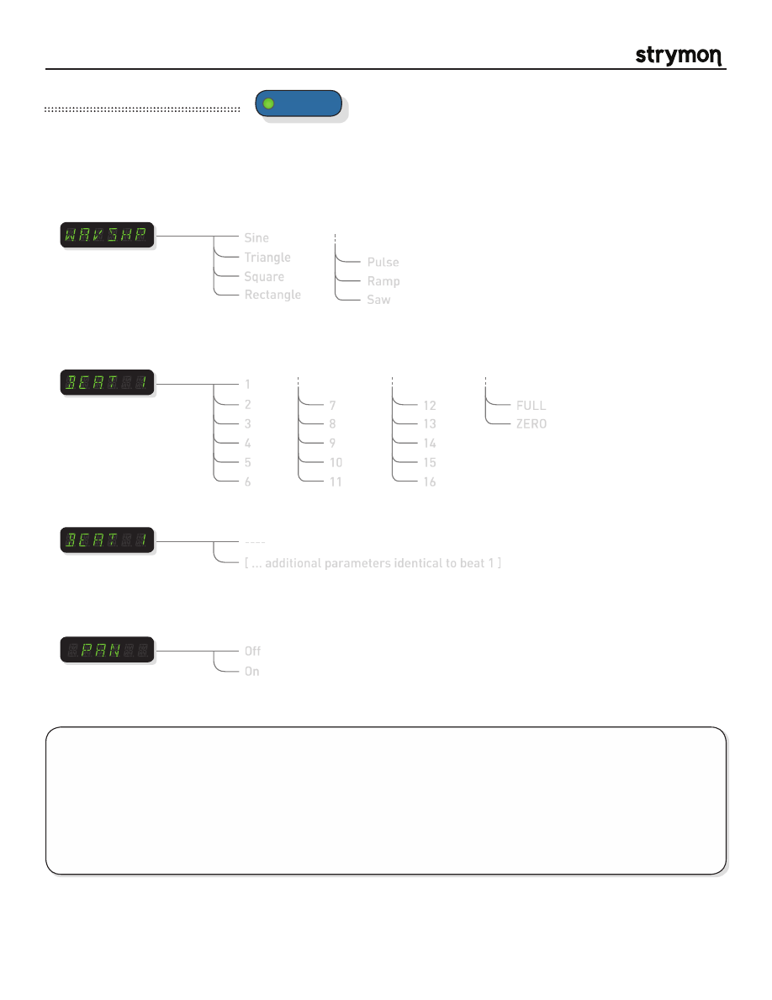

Mobius
-
User Manual
®
pg 16
TYPE
push (bank/BPM)
hold (save)
push (param)
hold (global)
VALUE
PARAM 1
PARAM 2
B
TAP
A
SPEED
DEPTH
LEVEL
BANK DOWN
BANK UP
FILTER
DESTROYER
VIBE
ROTARY
FLANGER
PHASER
CHORUS
FORMANT
AUTOSWELL
VINTAGE TREM
PATTERN TREM
QUADRATURE
®
Mod Machines: Pattern Trem
Beat 1
:
Sets the number of subdivisions for each beat. Additionally, when set to full, the signal
is present with no tremolo applied during that beat. When set to zero, no signal is
present for that beat.
1
2
3
4
5
6
7
8
9
10
11
12
13
14
15
16
FULL
ZERO
A pattern-sequenced tremolo with user definable patterns. Up to eight beats can be sequenced, with one to sixteen trem
cycles per beat. The unique and rhythmic effects can be sync’ed with a single press of the TAP footswitch.
PARAMETERS:
Pan
:
Determines the phase offset between the Left and Right LFO signals. Listen to the
effect it has on the stereo image as you adjust the parameter.
note:
Only applies
when using the unit in a stereo configuration.
Off
On
Waveshape
:
Selects the waveform shape of the tremolo LFO.
Triangle
Square
Rectangle
Pulse
Ramp
Saw
Sine
Beat 2-8
:
Has the same parameters as beat 1 but includes a ‘----‘ option to ignore the beat and all
subsequent beats, which signifies the end of the sequence.
----
[ ... additional parameters identical to beat 1 ]
TIPS & TRICKS:
Tap the TAP footswitch once to start the pattern sequence from the beginning. This is a powerful
performance feature to sync the pattern with specific song cues.
Select SINE waveshape and set PAN to ON for a traditional panning effect in a stereo rig. Experiment with different LFO
shapes and see how the stereo field is changed. Complex patterns can take on a psychedelic nature when PAN is ON in
stereo rigs.
You can create a simple geometric LFO waveform trem by setting BEAT 1 param to ‘1’, and Beat 2 to ‘---‘.